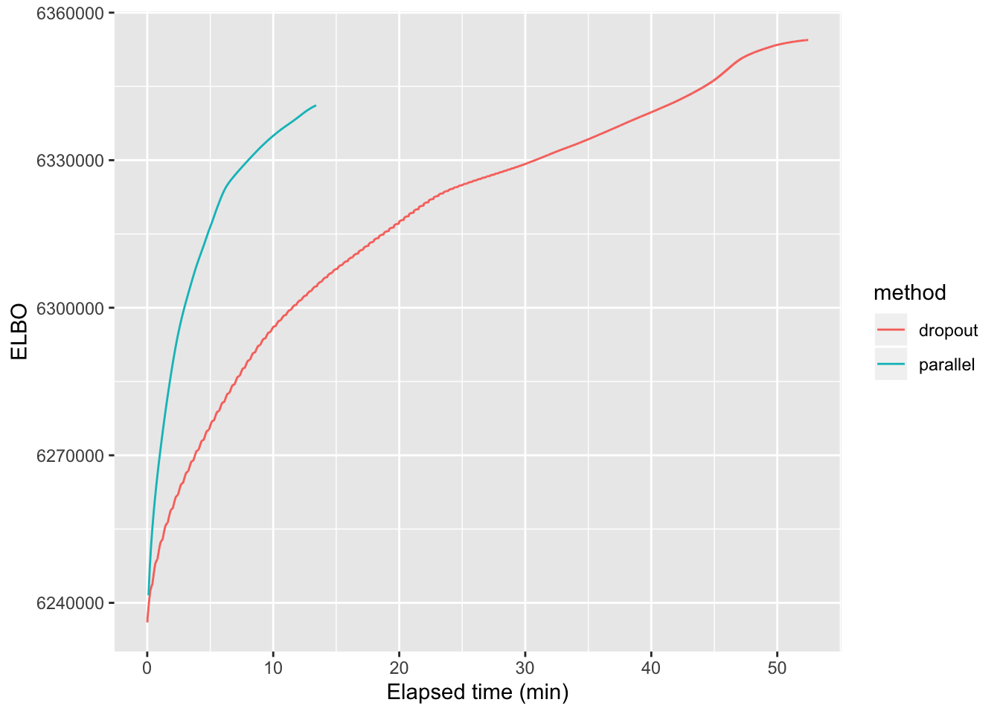

Last updated: 2019-07-08
Checks: 6 0
Knit directory: FLASHvestigations/
This reproducible R Markdown analysis was created with workflowr (version 1.2.0). The Report tab describes the reproducibility checks that were applied when the results were created. The Past versions tab lists the development history.
Great! Since the R Markdown file has been committed to the Git repository, you know the exact version of the code that produced these results.
Great job! The global environment was empty. Objects defined in the global environment can affect the analysis in your R Markdown file in unknown ways. For reproduciblity it’s best to always run the code in an empty environment.
The command set.seed(20180714) was run prior to running the code in the R Markdown file. Setting a seed ensures that any results that rely on randomness, e.g. subsampling or permutations, are reproducible.
Great job! Recording the operating system, R version, and package versions is critical for reproducibility.
Nice! There were no cached chunks for this analysis, so you can be confident that you successfully produced the results during this run.
Great! You are using Git for version control. Tracking code development and connecting the code version to the results is critical for reproducibility. The version displayed above was the version of the Git repository at the time these results were generated.
Note that you need to be careful to ensure that all relevant files for the analysis have been committed to Git prior to generating the results (you can use wflow_publish or wflow_git_commit). workflowr only checks the R Markdown file, but you know if there are other scripts or data files that it depends on. Below is the status of the Git repository when the results were generated:
Ignored files:
Ignored: .DS_Store
Ignored: .Rhistory
Ignored: .Rproj.user/
Ignored: analysis/.DS_Store
Ignored: code/.DS_Store
Ignored: code/flashier_bench/.DS_Store
Ignored: data/flashier_bench/
Untracked files:
Untracked: code/ebspca.R
Note that any generated files, e.g. HTML, png, CSS, etc., are not included in this status report because it is ok for generated content to have uncommitted changes.
These are the previous versions of the R Markdown and HTML files. If you’ve configured a remote Git repository (see ?wflow_git_remote), click on the hyperlinks in the table below to view them.
| File | Version | Author | Date | Message |
|---|---|---|---|---|
| Rmd | 9cfd41c | Jason Willwerscheid | 2019-07-08 | wflow_publish(“analysis/parallel_v2.Rmd”) |
I’ve rewritten flashier’s parallel backfitting algorithm. As before, factors can be backfit in parallel by setting parameter backfit.order = "parallel". The number of cores and type of cluster (socket or fork) can be set using global options (e.g., options(cl.type = "FORK", cl.cores = parallel::detectCores())).
Each worker is responsible for \(\frac{K}{\text{n.cores}}\) calls to ebnm (where \(K\) is the total number of factors), so we can only expect performance benefits from parallelization when each call to ebnm is fairly computationally intensive and when \(K\) is somewhat large. Further, since parallel updates are not guaranteed to produce a monotonic increase in the objective function, sequential updates should be preferred for all but the largest of problems.
For large problems, parallelization can provide a substantial speedup. As a test case, I greedily fit 50 factors to the droplet-based 3’ scRNA-seq dataset from Montoro et al. which I also used to benchmark flashier. (I used the same pre-processing steps, which are described here.) I backfit using both the default “dropout” method and the new implementation of the parallel approach. As shown below, parallel updates are able to attain the same ELBO as the “dropout” method in about 3-4 times fewer minutes. (While the parallel method stops earlier and thus has a lower final ELBO, the fit could be improved by lowering the convergence tolerance or doing an additional dropout backfit after the parallel backfit.)
library(ggplot2)
timing <- readRDS("./output/parallel_v2/timing.rds")
dropout.res <- data.table::fread("./output/parallel_v2/dropout_res.txt")
dropout.res$method <- "dropout"
dropout.res$time <- timing$dropout * 1:nrow(dropout.res) / nrow(dropout.res)
tmp <- aggregate(Max.chg ~ Iter, dropout.res, max)
parallel.res <- data.table::fread("./output/parallel_v2/parallel_res.txt")
parallel.res$method <- "parallel"
parallel.res$time <- timing$parallel * 1:nrow(parallel.res) / nrow(parallel.res)
all.res <- rbind(dropout.res, parallel.res)
all.res$time <- as.numeric(all.res$time)
ggplot(all.res, aes(x = time, y = Obj, color = method)) + geom_line() +
xlab("Elapsed time (min)") + ylab("ELBO")
For now, I’ve restricted parallel backfits to the case where residual variance is assumed to be constant across all entries (var.type = 0). Whereas sequential backfitting can take advantage of the fact that the update to expected residuals is rank-one, parallel backfits must re-estimate the residual variance from scratch at each iteration. Recall that the most useful variance structures (row-wise, column-wise, and constant) can be estimated as simple functions of expected squared residuals (row-wise means, column-wise means, and the overall mean). Recall also that flashier doesn’t usually store a full matrix of residuals \(R\), so that the expected squared residual \(R_{ij}^2\) must be calculated as:
\[ \mathbb{E} R_{ij}^2 = \mathbb{E} (Y_{ij} - \sum_k L_{ik} F_{jk})^2 = Y_{ij}^2 - 2 Y_{ij} \sum_k \mathbb{E} L_{ik} \mathbb{E} F_{jk} + \sum_{k \ne \ell} \mathbb{E} L_{ik} \mathbb{E} F_{jk} \mathbb{E} L_{i\ell} \mathbb{E} F_{j\ell} + \sum_k \mathbb{E} L_{ik}^2 \mathbb{E} F_{jk}^2 \]
When residual variance is constant across all entries, we only need \(\sum_{i, j} R_{ij}^2\), and each of the above terms can be efficiently summed over \(i\) and \(j\). The trick, of course, is to move the summation over \(i\) and \(j\) to the inside (and to pre-compute \(\sum_{i, j} Y_{ij}^2\)). For example,
\[ \sum_{i, j} \sum_{k \ne \ell} \mathbb{E} L_{ik} \mathbb{E} F_{jk} \mathbb{E} L_{i\ell} \mathbb{E} F_{j\ell} = \sum_{k, \ell} \sum_i \mathbb{E} L_{ik} \mathbb{E} L_{i\ell} \sum_j \mathbb{E} F_{jk} \mathbb{E} F_{j\ell} - \sum_k \sum_i (\mathbb{E} L_{ik})^2 \sum_j (\mathbb{E} F_{jk})^2 \]
The first term on the RHS can be computed as sum(crossprod(EL) * crossprod(EF)); the second can be computed as sum(colSums(EL^2) * colSums(EF^2)).
For row-wise or column-wise variance structures, however, the first term is much more difficult to compute. Instead of simply taking crossproducts, one must form a \(n \times k^2\) (or \(p \times k^2\)) matrix, so that unless \(k^2 \ll n\) (or \(k^2 \ll p\)), one would not be much worse off by simply storing the matrix of expected residuals. But we only stand to benefit from parallelization when we are doing large backfits on large data matrices; that is, when \(k\) is not small and when storing a matrix of residuals is expensive.
sessionInfo()#> R version 3.5.3 (2019-03-11)
#> Platform: x86_64-apple-darwin15.6.0 (64-bit)
#> Running under: macOS Mojave 10.14.5
#>
#> Matrix products: default
#> BLAS: /Library/Frameworks/R.framework/Versions/3.5/Resources/lib/libRblas.0.dylib
#> LAPACK: /Library/Frameworks/R.framework/Versions/3.5/Resources/lib/libRlapack.dylib
#>
#> locale:
#> [1] en_US.UTF-8/en_US.UTF-8/en_US.UTF-8/C/en_US.UTF-8/en_US.UTF-8
#>
#> attached base packages:
#> [1] stats graphics grDevices utils datasets methods base
#>
#> other attached packages:
#> [1] ggplot2_3.2.0
#>
#> loaded via a namespace (and not attached):
#> [1] Rcpp_1.0.1 knitr_1.22 whisker_0.3-2
#> [4] magrittr_1.5 workflowr_1.2.0 tidyselect_0.2.5
#> [7] munsell_0.5.0 colorspace_1.4-1 R6_2.4.0
#> [10] rlang_0.3.1 dplyr_0.8.0.1 stringr_1.4.0
#> [13] tools_3.5.3 grid_3.5.3 data.table_1.12.2
#> [16] gtable_0.3.0 xfun_0.6 withr_2.1.2
#> [19] git2r_0.25.2 htmltools_0.3.6 assertthat_0.2.1
#> [22] yaml_2.2.0 lazyeval_0.2.2 rprojroot_1.3-2
#> [25] digest_0.6.18 tibble_2.1.1 crayon_1.3.4
#> [28] purrr_0.3.2 fs_1.2.7 glue_1.3.1
#> [31] evaluate_0.13 rmarkdown_1.12 labeling_0.3
#> [34] stringi_1.4.3 pillar_1.3.1 compiler_3.5.3
#> [37] scales_1.0.0 backports_1.1.3 pkgconfig_2.0.2